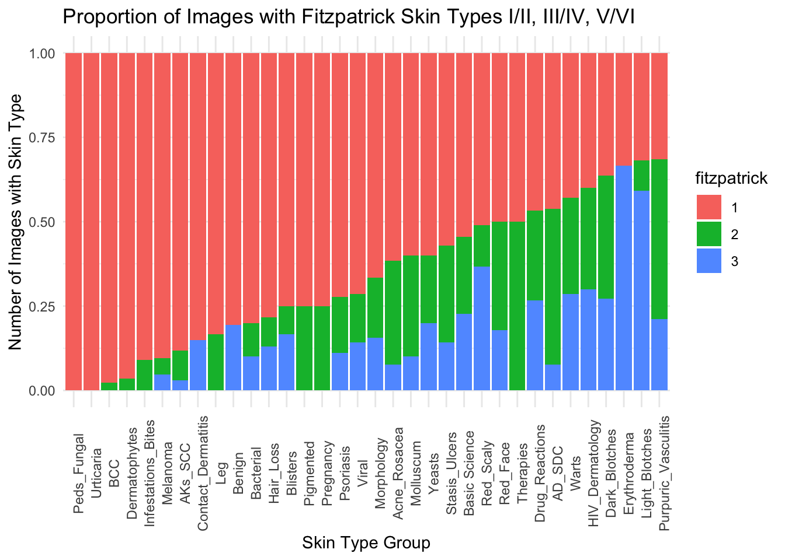
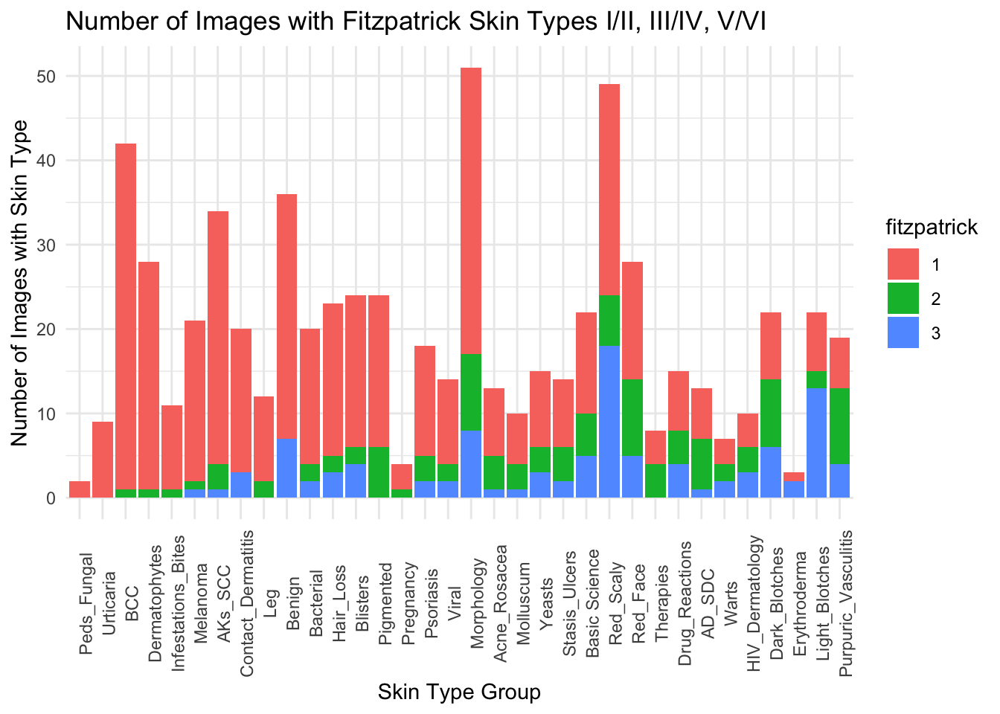

AAD Modules Analysis
Ramie Fathy
6/25/2020
#Reading in the functions I’ll be using…
p_table <- function(tab_data, ...) {
tab_data_2 <- deparse(substitute(tab_data))
table_p <- do.call(CreateTableOne,
list(data = as.name(tab_data_2), includeNA = TRUE, ...))
table_p_out <- print(table_p,
showAllLevels = TRUE,
printToggle = FALSE)
kable(table_p_out,
align = "c")
}#Read in data from spreadsheet
aad <- read_xls("AAD Modules Combined.xls", sheet = 1)
nrow(aad) #1174 images reviewed## [1] 1174##We reviewed a total of 1174 images, but some duplicates or not clinical images – let’s exclude those
# how many clinical images were of patients w/ indeterminate skin type?
nrow(aad %>% filter(fitzpatrick == 4)) # answer: 33## [1] 33# how many images were excluded
nrow(aad %>% filter(include == "No" |
fitzpatrick == "Excluded" |
dx == "Excluded-NoDx")) # answer: 410## [1] 410# how many clinical images were duplicates?
nrow(aad %>% filter(duplicate == "Yes")) # answer: 102## [1] 102aad <- aad %>%
filter(fitzpatrick != "Excluded") %>%
droplevels() %>%
mutate(module = as.factor(module)) %>%
mutate(include = as.factor(include)) %>%
mutate(duplicate = as.factor(duplicate)) %>%
mutate(fitzpatrick = as.factor(fitzpatrick)) %>%
mutate(dx = as.factor(dx)) %>%
mutate(coder = as.factor(coder))
data <- aad %>%
filter(include == "Yes" &
duplicate == "No" &
fitzpatrick != "4" &
dx != "Excluded-NoDx") %>%
droplevels()##After excluding images that were duplicates (102), non-clinical (410), indeterminate skin type (33), or didn’t have an associated diagnosis (3), we’re left with 663 images
Data Exploration
Let’s start with our primary question: what is the distribution of skin types in the AAD Modules’ images?
p_table(data,
vars = "fitzpatrick")| level | Overall | |
|---|---|---|
| n | 663 | |
| fitzpatrick (%) | 1 | 452 (68.2) |
| 2 | 108 (16.3) | |
| 3 | 103 (15.5) |
ggplot(data = data) +
geom_histogram(stat = "count", mapping = aes(x = fitzpatrick, fill = "Red")) +
labs(x = "Skin Type Group",
y = "Number of Images with Skin Type",
title = "Number of Images with Fitzpatrick Skin Types I/II, III/IV, V/VI") +
theme_minimal()## Warning: Ignoring unknown parameters: binwidth, bins, pad
Out of curiosity, how do our individual skin type score distributions compare?
# table form
p_table(data,
vars = "fitzpatrick",
strata = "coder")| level | BC | GO | RF | p | test | |
|---|---|---|---|---|---|---|
| n | 180 | 172 | 311 | |||
| fitzpatrick (%) | 1 | 124 (68.9) | 100 (58.1) | 228 (73.3) | 0.005 | |
| 2 | 34 (18.9) | 37 (21.5) | 37 (11.9) | |||
| 3 | 22 (12.2) | 35 (20.3) | 46 (14.8) |
# histogram form
ggplot(data = data) +
geom_histogram(stat = "count",
mapping = aes(x = coder, fill = fitzpatrick),
position = "fill") +
labs(x = "Skin Type Group",
y = "Number of Images with Skin Type",
title = "Number of Images with Fitzpatrick Skin Types I/II, III/IV, V/VI") +
theme_minimal()## Warning: Ignoring unknown parameters: binwidth, bins, pad
# histogram form, side-by-side
ggplot(data = data) +
geom_histogram(stat = "count", mapping = aes(x = fitzpatrick, fill = coder)) +
facet_wrap(~ coder, ncol = 1) +
labs(x = "Skin Type Group",
y = "Number of Images with Skin Type",
title = "Number of Images with Fitzpatrick Skin Types I/II, III/IV, V/VI") +
theme_minimal()## Warning: Ignoring unknown parameters: binwidth, bins, pad ##Pretty similar, though RF’s lectures seemed to have more 3’s than 2’s and GO’s had fewer 1’s than BC/RF
##Pretty similar, though RF’s lectures seemed to have more 3’s than 2’s and GO’s had fewer 1’s than BC/RF
#By Module
# table form
p_table(data,
vars = "fitzpatrick",
strata = "module")| level | Acne_Rosacea | AD_SDC | AKs_SCC | Bacterial | Basic Science | BCC | Benign | Blisters | Contact_Dermatitis | Dark_Blotches | Dermatophytes | Drug_Reactions | Erythroderma | Hair_Loss | HIV_Dermatology | Infestations_Bites | Leg | Light_Blotches | Melanoma | Molluscum | Morphology | Peds_Fungal | Pigmented | Pregnancy | Psoriasis | Purpuric_Vasculitis | Red_Face | Red_Scaly | Stasis_Ulcers | Therapies | Urticaria | Viral | Warts | Yeasts | p | test | |
|---|---|---|---|---|---|---|---|---|---|---|---|---|---|---|---|---|---|---|---|---|---|---|---|---|---|---|---|---|---|---|---|---|---|---|---|---|---|
| n | 13 | 13 | 34 | 20 | 22 | 42 | 36 | 24 | 20 | 22 | 28 | 15 | 3 | 23 | 10 | 11 | 12 | 22 | 21 | 10 | 51 | 2 | 24 | 4 | 18 | 19 | 28 | 49 | 14 | 8 | 9 | 14 | 7 | 15 | |||
| fitzpatrick (%) | 1 | 8 (61.5) | 6 (46.2) | 30 (88.2) | 16 (80.0) | 12 (54.5) | 41 (97.6) | 29 (80.6) | 18 (75.0) | 17 (85.0) | 8 (36.4) | 27 (96.4) | 7 (46.7) | 1 (33.3) | 18 (78.3) | 4 (40.0) | 10 (90.9) | 10 (83.3) | 7 (31.8) | 19 (90.5) | 6 (60.0) | 34 (66.7) | 2 (100.0) | 18 (75.0) | 3 (75.0) | 13 (72.2) | 6 (31.6) | 14 (50.0) | 25 (51.0) | 8 (57.1) | 4 (50.0) | 9 (100.0) | 10 (71.4) | 3 (42.9) | 9 (60.0) | <0.001 | |
| 2 | 4 (30.8) | 6 (46.2) | 3 ( 8.8) | 2 (10.0) | 5 (22.7) | 1 ( 2.4) | 0 ( 0.0) | 2 ( 8.3) | 0 ( 0.0) | 8 (36.4) | 1 ( 3.6) | 4 (26.7) | 0 ( 0.0) | 2 ( 8.7) | 3 (30.0) | 1 ( 9.1) | 2 (16.7) | 2 ( 9.1) | 1 ( 4.8) | 3 (30.0) | 9 (17.6) | 0 ( 0.0) | 6 (25.0) | 1 (25.0) | 3 (16.7) | 9 (47.4) | 9 (32.1) | 6 (12.2) | 4 (28.6) | 4 (50.0) | 0 ( 0.0) | 2 (14.3) | 2 (28.6) | 3 (20.0) | |||
| 3 | 1 ( 7.7) | 1 ( 7.7) | 1 ( 2.9) | 2 (10.0) | 5 (22.7) | 0 ( 0.0) | 7 (19.4) | 4 (16.7) | 3 (15.0) | 6 (27.3) | 0 ( 0.0) | 4 (26.7) | 2 (66.7) | 3 (13.0) | 3 (30.0) | 0 ( 0.0) | 0 ( 0.0) | 13 (59.1) | 1 ( 4.8) | 1 (10.0) | 8 (15.7) | 0 ( 0.0) | 0 ( 0.0) | 0 ( 0.0) | 2 (11.1) | 4 (21.1) | 5 (17.9) | 18 (36.7) | 2 (14.3) | 0 ( 0.0) | 0 ( 0.0) | 2 (14.3) | 2 (28.6) | 3 (20.0) |
data_byModule <- data %>%
group_by(module) %>%
summarise(fitz1 = sum(fitzpatrick == "1"), fitz2 = sum(fitzpatrick == "2"),
fitz3 = sum(fitzpatrick == "3"), freq = fitz1/(fitz1+fitz2+fitz3))## `summarise()` ungrouping output (override with `.groups` argument)order <- data_byModule[order(data_byModule$freq, decreasing = TRUE),]$module
data2 <- data %>%
mutate(module = fct_relevel(module, levels = as.character(order)))## Warning: Outer names are only allowed for unnamed scalar atomic inputs# histogram form
ggplot(data = data2) +
geom_histogram(stat = "count",
mapping = aes(x = module, fill = fitzpatrick),
position = "fill") +
labs(x = "Skin Type Group",
y = "Number of Images with Skin Type",
title = "Proportion of Images with Fitzpatrick Skin Types I/II, III/IV, V/VI") +
theme_minimal() +
theme(axis.text.x = element_text(angle = 90))## Warning: Ignoring unknown parameters: binwidth, bins, pad
# histogram form
ggplot(data = data2) +
geom_histogram(stat = "count",
mapping = aes(x = module, fill = fitzpatrick)) +
labs(x = "Skin Type Group",
y = "Number of Images with Skin Type",
title = "Number of Images with Fitzpatrick Skin Types I/II, III/IV, V/VI") +
theme_minimal() +
theme(axis.text.x = element_text(angle = 90))## Warning: Ignoring unknown parameters: binwidth, bins, pad
still working on figuring out how best to order the above histograms… lmk if you have any ideas
#By Diagnosis
# table form...
p_table(data,
vars = "dx",
strata = "fitzpatrick")| level | 1 | 2 | 3 | p | test | |
|---|---|---|---|---|---|---|
| n | 452 | 108 | 103 | |||
| dx (%) | acanthosis nigricans | 0 (0.0) | 0 (0.0) | 1 (1.0) | <0.001 | |
| acne rosacea | 1 (0.2) | 0 (0.0) | 0 (0.0) | |||
| acne vulgaris | 7 (1.5) | 9 (8.3) | 2 (1.9) | |||
| acrochordons | 2 (0.4) | 0 (0.0) | 0 (0.0) | |||
| actinic keratosis | 5 (1.1) | 0 (0.0) | 0 (0.0) | |||
| actinic keratosis SCC | 1 (0.2) | 0 (0.0) | 0 (0.0) | |||
| actinic purpura | 1 (0.2) | 0 (0.0) | 0 (0.0) | |||
| allergic contact dermatitis | 2 (0.4) | 0 (0.0) | 0 (0.0) | |||
| alopecia areata | 2 (0.4) | 2 (1.9) | 1 (1.0) | |||
| angioedema | 1 (0.2) | 0 (0.0) | 0 (0.0) | |||
| asteatotic dermatitis | 2 (0.4) | 0 (0.0) | 0 (0.0) | |||
| atopic dermatitis | 7 (1.5) | 8 (7.4) | 1 (1.0) | |||
| atopic eruption of pregnancy | 1 (0.2) | 1 (0.9) | 0 (0.0) | |||
| atrophy | 1 (0.2) | 0 (0.0) | 0 (0.0) | |||
| basal cell carcinoma | 39 (8.6) | 1 (0.9) | 0 (0.0) | |||
| bedbug bites | 2 (0.4) | 0 (0.0) | 0 (0.0) | |||
| blistering dacytlitis | 1 (0.2) | 0 (0.0) | 0 (0.0) | |||
| brown recluse bite | 4 (0.9) | 0 (0.0) | 0 (0.0) | |||
| bulla | 2 (0.4) | 0 (0.0) | 0 (0.0) | |||
| bullous impetigo | 4 (0.9) | 0 (0.0) | 0 (0.0) | |||
| bullous pemphigoid | 2 (0.4) | 0 (0.0) | 0 (0.0) | |||
| candidal intertrigo | 2 (0.4) | 0 (0.0) | 0 (0.0) | |||
| cellulitis | 1 (0.2) | 1 (0.9) | 0 (0.0) | |||
| cherry angioma | 2 (0.4) | 0 (0.0) | 0 (0.0) | |||
| chicken pox | 0 (0.0) | 2 (1.9) | 0 (0.0) | |||
| chloroquine-induced hyperpigmentation | 0 (0.0) | 0 (0.0) | 1 (1.0) | |||
| chronic ulcer | 1 (0.2) | 0 (0.0) | 0 (0.0) | |||
| confluent and reticulated papillomatosis | 0 (0.0) | 2 (1.9) | 0 (0.0) | |||
| contact dermatitis | 3 (0.7) | 0 (0.0) | 0 (0.0) | |||
| cyst | 0 (0.0) | 1 (0.9) | 0 (0.0) | |||
| dermatitis | 0 (0.0) | 1 (0.9) | 0 (0.0) | |||
| dermatofibroma | 2 (0.4) | 0 (0.0) | 2 (1.9) | |||
| dermatosis papulosa nigra | 0 (0.0) | 0 (0.0) | 2 (1.9) | |||
| diaper candidiasis | 2 (0.4) | 0 (0.0) | 0 (0.0) | |||
| DIC | 0 (0.0) | 1 (0.9) | 0 (0.0) | |||
| DRESS | 0 (0.0) | 0 (0.0) | 1 (1.0) | |||
| drug eruption | 0 (0.0) | 0 (0.0) | 2 (1.9) | |||
| drug rash | 1 (0.2) | 0 (0.0) | 0 (0.0) | |||
| dyspigmentation after cryotherapy | 0 (0.0) | 0 (0.0) | 1 (1.0) | |||
| ecthyma | 2 (0.4) | 0 (0.0) | 0 (0.0) | |||
| ehler-danlos | 0 (0.0) | 0 (0.0) | 1 (1.0) | |||
| epidermal inclusion cyst | 4 (0.9) | 0 (0.0) | 0 (0.0) | |||
| erosion | 3 (0.7) | 0 (0.0) | 0 (0.0) | |||
| erysipelas | 3 (0.7) | 0 (0.0) | 0 (0.0) | |||
| erythema | 1 (0.2) | 0 (0.0) | 0 (0.0) | |||
| erythema infectiousum | 2 (0.4) | 0 (0.0) | 1 (1.0) | |||
| erythema nodosum | 1 (0.2) | 0 (0.0) | 0 (0.0) | |||
| erythematous nodule | 0 (0.0) | 0 (0.0) | 1 (1.0) | |||
| erythematous patches | 1 (0.2) | 0 (0.0) | 0 (0.0) | |||
| erythroderma | 1 (0.2) | 0 (0.0) | 0 (0.0) | |||
| exanthematous drug eruption | 3 (0.7) | 0 (0.0) | 0 (0.0) | |||
| excoriation | 0 (0.0) | 0 (0.0) | 1 (1.0) | |||
| female pattern hair loss | 8 (1.8) | 0 (0.0) | 0 (0.0) | |||
| fibrous papule | 2 (0.4) | 0 (0.0) | 0 (0.0) | |||
| fixed drug eruption | 0 (0.0) | 2 (1.9) | 0 (0.0) | |||
| folliculitis | 2 (0.4) | 0 (0.0) | 2 (1.9) | |||
| Fordyce Spots | 0 (0.0) | 0 (0.0) | 1 (1.0) | |||
| furuncle/carbuncle | 3 (0.7) | 1 (0.9) | 0 (0.0) | |||
| genital herpes | 0 (0.0) | 0 (0.0) | 1 (1.0) | |||
| genital warts | 0 (0.0) | 0 (0.0) | 1 (1.0) | |||
| guttate psoriasis | 2 (0.4) | 0 (0.0) | 0 (0.0) | |||
| hand foot mouth disease | 1 (0.2) | 0 (0.0) | 0 (0.0) | |||
| herpes simplex | 5 (1.1) | 0 (0.0) | 1 (1.0) | |||
| herpes zoster | 2 (0.4) | 0 (0.0) | 0 (0.0) | |||
| herpetic whitlow | 1 (0.2) | 0 (0.0) | 0 (0.0) | |||
| HIV-associated lipoatrophy | 0 (0.0) | 0 (0.0) | 1 (1.0) | |||
| HIV-associated lipodystrophy | 0 (0.0) | 0 (0.0) | 1 (1.0) | |||
| hyperpigmentation | 0 (0.0) | 1 (0.9) | 2 (1.9) | |||
| hypopigmentation | 0 (0.0) | 2 (1.9) | 0 (0.0) | |||
| impetiginized mycosis fungoides | 1 (0.2) | 0 (0.0) | 0 (0.0) | |||
| impetigo | 4 (0.9) | 0 (0.0) | 0 (0.0) | |||
| irritant contact dermatitis | 3 (0.7) | 0 (0.0) | 0 (0.0) | |||
| kaposi sarcoma | 2 (0.4) | 0 (0.0) | 0 (0.0) | |||
| keloid | 1 (0.2) | 0 (0.0) | 4 (3.9) | |||
| keratosis pialris | 1 (0.2) | 0 (0.0) | 0 (0.0) | |||
| latex allergy | 2 (0.4) | 0 (0.0) | 0 (0.0) | |||
| leukocytoclastic vasculitis | 1 (0.2) | 3 (2.8) | 0 (0.0) | |||
| lichenification | 0 (0.0) | 0 (0.0) | 1 (1.0) | |||
| lipodermatosclerosis | 0 (0.0) | 1 (0.9) | 0 (0.0) | |||
| lipoma | 1 (0.2) | 0 (0.0) | 0 (0.0) | |||
| macule | 4 (0.9) | 1 (0.9) | 0 (0.0) | |||
| macule/patch | 0 (0.0) | 1 (0.9) | 0 (0.0) | |||
| malar rash of lupus | 3 (0.7) | 0 (0.0) | 0 (0.0) | |||
| male pattern hair loss | 6 (1.3) | 0 (0.0) | 0 (0.0) | |||
| measles | 2 (0.4) | 0 (0.0) | 0 (0.0) | |||
| medication allergy | 1 (0.2) | 0 (0.0) | 0 (0.0) | |||
| melanoma | 10 (2.2) | 0 (0.0) | 0 (0.0) | |||
| melanoma, acral | 2 (0.4) | 0 (0.0) | 1 (1.0) | |||
| melanoma, amelanotic | 3 (0.7) | 0 (0.0) | 0 (0.0) | |||
| melanoma, lentigo maligna | 2 (0.4) | 0 (0.0) | 0 (0.0) | |||
| melanoma, nodular | 3 (0.7) | 0 (0.0) | 0 (0.0) | |||
| melanoma, subungual | 1 (0.2) | 0 (0.0) | 0 (0.0) | |||
| melanoma, superficial spreading | 3 (0.7) | 1 (0.9) | 0 (0.0) | |||
| melasma | 1 (0.2) | 1 (0.9) | 0 (0.0) | |||
| merkel cell carcinoma | 1 (0.2) | 0 (0.0) | 0 (0.0) | |||
| milium | 2 (0.4) | 0 (0.0) | 0 (0.0) | |||
| minocycline-induced hyperpigmentation | 1 (0.2) | 3 (2.8) | 0 (0.0) | |||
| molluscum contagiosum | 7 (1.5) | 4 (3.7) | 1 (1.0) | |||
| morphea | 1 (0.2) | 0 (0.0) | 0 (0.0) | |||
| necrotizing fasciitis | 1 (0.2) | 1 (0.9) | 0 (0.0) | |||
| nevus | 16 (3.5) | 6 (5.6) | 0 (0.0) | |||
| nickel dermatitis | 1 (0.2) | 0 (0.0) | 3 (2.9) | |||
| nodular melanoma | 1 (0.2) | 0 (0.0) | 0 (0.0) | |||
| nodule | 1 (0.2) | 0 (0.0) | 1 (1.0) | |||
| nonspecific viral exanthem | 2 (0.4) | 0 (0.0) | 0 (0.0) | |||
| nummular dermatitis | 8 (1.8) | 0 (0.0) | 0 (0.0) | |||
| Onychomycosis | 7 (1.5) | 0 (0.0) | 0 (0.0) | |||
| papule | 3 (0.7) | 1 (0.9) | 1 (1.0) | |||
| papule/plaque | 1 (0.2) | 0 (0.0) | 0 (0.0) | |||
| parvovirus B19 | 0 (0.0) | 1 (0.9) | 0 (0.0) | |||
| parvovirus B20 | 0 (0.0) | 1 (0.9) | 0 (0.0) | |||
| patch | 2 (0.4) | 2 (1.9) | 1 (1.0) | |||
| patch testing | 2 (0.4) | 0 (0.0) | 0 (0.0) | |||
| pemphigoid gestationis | 1 (0.2) | 0 (0.0) | 0 (0.0) | |||
| pemphigus vulgaris | 1 (0.2) | 0 (0.0) | 1 (1.0) | |||
| periorificial dermatitis | 1 (0.2) | 1 (0.9) | 0 (0.0) | |||
| petechiae | 1 (0.2) | 0 (0.0) | 0 (0.0) | |||
| pityriasis alba | 0 (0.0) | 1 (0.9) | 1 (1.0) | |||
| pityriasis rosacea | 4 (0.9) | 3 (2.8) | 4 (3.9) | |||
| plaque | 5 (1.1) | 0 (0.0) | 0 (0.0) | |||
| post-inflammatory hyperpigmentation | 0 (0.0) | 0 (0.0) | 1 (1.0) | |||
| post-inflammatory hypopigmentation | 0 (0.0) | 0 (0.0) | 1 (1.0) | |||
| post-inflammatory pigment alteration | 0 (0.0) | 0 (0.0) | 1 (1.0) | |||
| postinflammatory hypopigmentation | 0 (0.0) | 0 (0.0) | 1 (1.0) | |||
| psoriasis | 20 (4.4) | 7 (6.5) | 10 (9.7) | |||
| psoriatic erythroderma | 1 (0.2) | 0 (0.0) | 0 (0.0) | |||
| PUPPP | 1 (0.2) | 0 (0.0) | 0 (0.0) | |||
| purpura | 4 (0.9) | 7 (6.5) | 0 (0.0) | |||
| pustule | 1 (0.2) | 0 (0.0) | 1 (1.0) | |||
| rhus dermatitis | 8 (1.8) | 1 (0.9) | 0 (0.0) | |||
| ring wart | 1 (0.2) | 0 (0.0) | 0 (0.0) | |||
| rosacea | 5 (1.1) | 1 (0.9) | 2 (1.9) | |||
| roseola | 0 (0.0) | 0 (0.0) | 1 (1.0) | |||
| rubella | 1 (0.2) | 0 (0.0) | 0 (0.0) | |||
| scabies | 6 (1.3) | 1 (0.9) | 0 (0.0) | |||
| scar | 1 (0.2) | 0 (0.0) | 0 (0.0) | |||
| sebaceous hyperplasia | 3 (0.7) | 0 (0.0) | 0 (0.0) | |||
| seborrheic dermatitis | 12 (2.7) | 0 (0.0) | 8 (7.8) | |||
| seborrheic keratosis | 10 (2.2) | 0 (0.0) | 0 (0.0) | |||
| secondary syphilis | 2 (0.4) | 0 (0.0) | 2 (1.9) | |||
| Sezary Syndrome | 0 (0.0) | 0 (0.0) | 2 (1.9) | |||
| shingles | 2 (0.4) | 0 (0.0) | 0 (0.0) | |||
| side effect | 1 (0.2) | 1 (0.9) | 0 (0.0) | |||
| SJS/TEN | 4 (0.9) | 2 (1.9) | 3 (2.9) | |||
| solar elastosis | 1 (0.2) | 0 (0.0) | 0 (0.0) | |||
| Spitz nevus | 1 (0.2) | 0 (0.0) | 0 (0.0) | |||
| squamous cell carcinoma | 11 (2.4) | 3 (2.8) | 1 (1.0) | |||
| stasis dermatitis | 17 (3.8) | 1 (0.9) | 0 (0.0) | |||
| STI unspecified | 0 (0.0) | 0 (0.0) | 1 (1.0) | |||
| stucco keratoses | 1 (0.2) | 0 (0.0) | 0 (0.0) | |||
| sun-damage | 7 (1.5) | 0 (0.0) | 0 (0.0) | |||
| swelling of feet | 0 (0.0) | 0 (0.0) | 1 (1.0) | |||
| syphilis | 0 (0.0) | 2 (1.9) | 0 (0.0) | |||
| telogen effluvium | 1 (0.2) | 0 (0.0) | 0 (0.0) | |||
| tinea capitis | 1 (0.2) | 0 (0.0) | 0 (0.0) | |||
| tinea corporis | 5 (1.1) | 3 (2.8) | 2 (1.9) | |||
| tinea cruris | 4 (0.9) | 0 (0.0) | 0 (0.0) | |||
| tinea incognito | 0 (0.0) | 0 (0.0) | 2 (1.9) | |||
| tinea pedis | 13 (2.9) | 0 (0.0) | 1 (1.0) | |||
| tinea versicolor | 8 (1.8) | 7 (6.5) | 4 (3.9) | |||
| traction alopecia | 0 (0.0) | 0 (0.0) | 2 (1.9) | |||
| traumatized cherry angioma | 1 (0.2) | 0 (0.0) | 0 (0.0) | |||
| trichotillosis | 1 (0.2) | 0 (0.0) | 0 (0.0) | |||
| tumor | 1 (0.2) | 0 (0.0) | 1 (1.0) | |||
| ulcer | 2 (0.4) | 2 (1.9) | 2 (1.9) | |||
| urticaria | 8 (1.8) | 0 (0.0) | 0 (0.0) | |||
| urticaria multiforme | 1 (0.2) | 0 (0.0) | 0 (0.0) | |||
| verapamil-induced hyperpigmentation | 1 (0.2) | 0 (0.0) | 0 (0.0) | |||
| verruca vulgaris | 0 (0.0) | 1 (0.9) | 0 (0.0) | |||
| verrucae planae | 1 (0.2) | 0 (0.0) | 0 (0.0) | |||
| vesicle/bulla | 3 (0.7) | 1 (0.9) | 0 (0.0) | |||
| vesicles | 1 (0.2) | 0 (0.0) | 0 (0.0) | |||
| viral exanthem | 1 (0.2) | 0 (0.0) | 0 (0.0) | |||
| vitiligo | 1 (0.2) | 1 (0.9) | 3 (2.9) | |||
| vitiligo - Wood’s lamp | 1 (0.2) | 0 (0.0) | 3 (2.9) | |||
| wheal | 1 (0.2) | 0 (0.0) | 0 (0.0) |
### NOTE: combine duplicates with slightly different names, like acne/acne vulgaris
### QUESTION: should we combine the melanomas?lots of diagnoses… so let’s just look at ones with at least five pictures
names(which(table(data$dx) > 5))## [1] "acne vulgaris" "atopic dermatitis" "basal cell carcinoma" "female pattern hair loss"
## [5] "herpes simplex" "male pattern hair loss" "melanoma" "molluscum contagiosum"
## [9] "nevus" "nummular dermatitis" "Onychomycosis" "pityriasis rosacea"
## [13] "psoriasis" "purpura" "rhus dermatitis" "rosacea"
## [17] "scabies" "seborrheic dermatitis" "seborrheic keratosis" "SJS/TEN"
## [21] "squamous cell carcinoma" "stasis dermatitis" "sun-damage" "tinea corporis"
## [25] "tinea pedis" "tinea versicolor" "ulcer" "urticaria"# gives us 29 diagnoses, a lot easier to work with...
dxs <- names(which(table(data$dx) > 5))
#370 images with those diagnoses
dxs <- data %>% filter(dx %in% dxs) %>% droplevels()
# table form...
p_table(dxs,
vars = "dx",
strata = "fitzpatrick")| level | 1 | 2 | 3 | p | test | |
|---|---|---|---|---|---|---|
| n | 264 | 66 | 42 | |||
| dx (%) | acne vulgaris | 7 ( 2.7) | 9 (13.6) | 2 ( 4.8) | <0.001 | |
| atopic dermatitis | 7 ( 2.7) | 8 (12.1) | 1 ( 2.4) | |||
| basal cell carcinoma | 39 (14.8) | 1 ( 1.5) | 0 ( 0.0) | |||
| female pattern hair loss | 8 ( 3.0) | 0 ( 0.0) | 0 ( 0.0) | |||
| herpes simplex | 5 ( 1.9) | 0 ( 0.0) | 1 ( 2.4) | |||
| male pattern hair loss | 6 ( 2.3) | 0 ( 0.0) | 0 ( 0.0) | |||
| melanoma | 10 ( 3.8) | 0 ( 0.0) | 0 ( 0.0) | |||
| molluscum contagiosum | 7 ( 2.7) | 4 ( 6.1) | 1 ( 2.4) | |||
| nevus | 16 ( 6.1) | 6 ( 9.1) | 0 ( 0.0) | |||
| nummular dermatitis | 8 ( 3.0) | 0 ( 0.0) | 0 ( 0.0) | |||
| Onychomycosis | 7 ( 2.7) | 0 ( 0.0) | 0 ( 0.0) | |||
| pityriasis rosacea | 4 ( 1.5) | 3 ( 4.5) | 4 ( 9.5) | |||
| psoriasis | 20 ( 7.6) | 7 (10.6) | 10 (23.8) | |||
| purpura | 4 ( 1.5) | 7 (10.6) | 0 ( 0.0) | |||
| rhus dermatitis | 8 ( 3.0) | 1 ( 1.5) | 0 ( 0.0) | |||
| rosacea | 5 ( 1.9) | 1 ( 1.5) | 2 ( 4.8) | |||
| scabies | 6 ( 2.3) | 1 ( 1.5) | 0 ( 0.0) | |||
| seborrheic dermatitis | 12 ( 4.5) | 0 ( 0.0) | 8 (19.0) | |||
| seborrheic keratosis | 10 ( 3.8) | 0 ( 0.0) | 0 ( 0.0) | |||
| SJS/TEN | 4 ( 1.5) | 2 ( 3.0) | 3 ( 7.1) | |||
| squamous cell carcinoma | 11 ( 4.2) | 3 ( 4.5) | 1 ( 2.4) | |||
| stasis dermatitis | 17 ( 6.4) | 1 ( 1.5) | 0 ( 0.0) | |||
| sun-damage | 7 ( 2.7) | 0 ( 0.0) | 0 ( 0.0) | |||
| tinea corporis | 5 ( 1.9) | 3 ( 4.5) | 2 ( 4.8) | |||
| tinea pedis | 13 ( 4.9) | 0 ( 0.0) | 1 ( 2.4) | |||
| tinea versicolor | 8 ( 3.0) | 7 (10.6) | 4 ( 9.5) | |||
| ulcer | 2 ( 0.8) | 2 ( 3.0) | 2 ( 4.8) | |||
| urticaria | 8 ( 3.0) | 0 ( 0.0) | 0 ( 0.0) | |||
| ##The inv | erse might be more interesti | ng: for each | dx, what pro | portion of im | ages conta | ins patients with each skin type group? |
# table form...
p_table(dxs,
vars = "fitzpatrick",
strata = "dx")| level | acne vulgaris | atopic dermatitis | basal cell carcinoma | female pattern hair loss | herpes simplex | male pattern hair loss | melanoma | molluscum contagiosum | nevus | nummular dermatitis | Onychomycosis | pityriasis rosacea | psoriasis | purpura | rhus dermatitis | rosacea | scabies | seborrheic dermatitis | seborrheic keratosis | SJS/TEN | squamous cell carcinoma | stasis dermatitis | sun-damage | tinea corporis | tinea pedis | tinea versicolor | ulcer | urticaria | p | test | |
|---|---|---|---|---|---|---|---|---|---|---|---|---|---|---|---|---|---|---|---|---|---|---|---|---|---|---|---|---|---|---|---|
| n | 18 | 16 | 40 | 8 | 6 | 6 | 10 | 12 | 22 | 8 | 7 | 11 | 37 | 11 | 9 | 8 | 7 | 20 | 10 | 9 | 15 | 18 | 7 | 10 | 14 | 19 | 6 | 8 | |||
| fitzpatrick (%) | 1 | 7 (38.9) | 7 (43.8) | 39 (97.5) | 8 (100.0) | 5 (83.3) | 6 (100.0) | 10 (100.0) | 7 (58.3) | 16 (72.7) | 8 (100.0) | 7 (100.0) | 4 (36.4) | 20 (54.1) | 4 (36.4) | 8 (88.9) | 5 (62.5) | 6 (85.7) | 12 (60.0) | 10 (100.0) | 4 (44.4) | 11 (73.3) | 17 (94.4) | 7 (100.0) | 5 (50.0) | 13 (92.9) | 8 (42.1) | 2 (33.3) | 8 (100.0) | <0.001 | |
| 2 | 9 (50.0) | 8 (50.0) | 1 ( 2.5) | 0 ( 0.0) | 0 ( 0.0) | 0 ( 0.0) | 0 ( 0.0) | 4 (33.3) | 6 (27.3) | 0 ( 0.0) | 0 ( 0.0) | 3 (27.3) | 7 (18.9) | 7 (63.6) | 1 (11.1) | 1 (12.5) | 1 (14.3) | 0 ( 0.0) | 0 ( 0.0) | 2 (22.2) | 3 (20.0) | 1 ( 5.6) | 0 ( 0.0) | 3 (30.0) | 0 ( 0.0) | 7 (36.8) | 2 (33.3) | 0 ( 0.0) | |||
| 3 | 2 (11.1) | 1 ( 6.2) | 0 ( 0.0) | 0 ( 0.0) | 1 (16.7) | 0 ( 0.0) | 0 ( 0.0) | 1 ( 8.3) | 0 ( 0.0) | 0 ( 0.0) | 0 ( 0.0) | 4 (36.4) | 10 (27.0) | 0 ( 0.0) | 0 ( 0.0) | 2 (25.0) | 0 ( 0.0) | 8 (40.0) | 0 ( 0.0) | 3 (33.3) | 1 ( 6.7) | 0 ( 0.0) | 0 ( 0.0) | 2 (20.0) | 1 ( 7.1) | 4 (21.1) | 2 (33.3) | 0 ( 0.0) |
##the following have >10% of images being of patients with FP V/VI skin type: ###acne, ###psorasis, ###pityriasis rosacea, ###rosacea, ###SJS/TEN, ###ulcer
##that’s SIX diagnoses… out of the top 29… ###i.e., 20.7% of the top diagnoses have somewhat decent representation…
##FP III/IV have a few more than that… but not by much: ###acne, ###atopic dermatitis ###molluscum contagiosum, ###nevus, ###pityriasis rosacea, ###psoriasis, ###purpura, ###rhus dermatitis ###rosacea, ###scabies, ###SJS/TEN, ###squamous cell carcinoma, ###tinea corporis, ###tinea versicolor, ###ulcer
##15/29 of the top 29 diagnoses have over 10% of their images including someone of skin type III/IV ###51.72% – better, but still not where it should be ###Question is: what is the proportion of the population with these skin types? ###In other words: what should our cutoff for reasonable representation be?
#ignore this for now...
# data_byModule <- data %>%
# count(fitzpatrick, module) %>%
# mutate(freq = n / sum(n))
#
# fitz1 <- data_byModule %>% filter(fitzpatrick == "1")
# order <- fitz1[order(data_byModule$freq, decreasing = TRUE),]$module
#
# data <- merge(x = data, y = data_byModule, by = c("module", "fitzpatrick"))
#
# freq <- unique(data_byModule %>% filter(fitzpatrick == "1"))$freq
#
# data2$module <- factor(data2$module, levels = levels(data2$module)[order(-freq)])